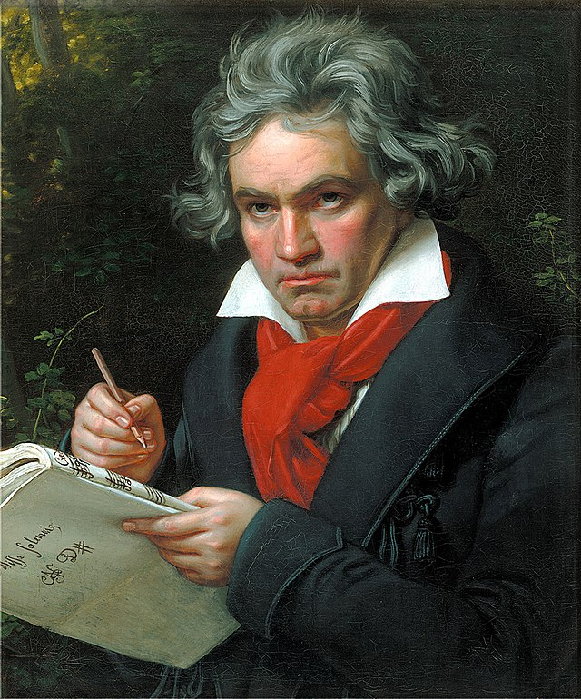
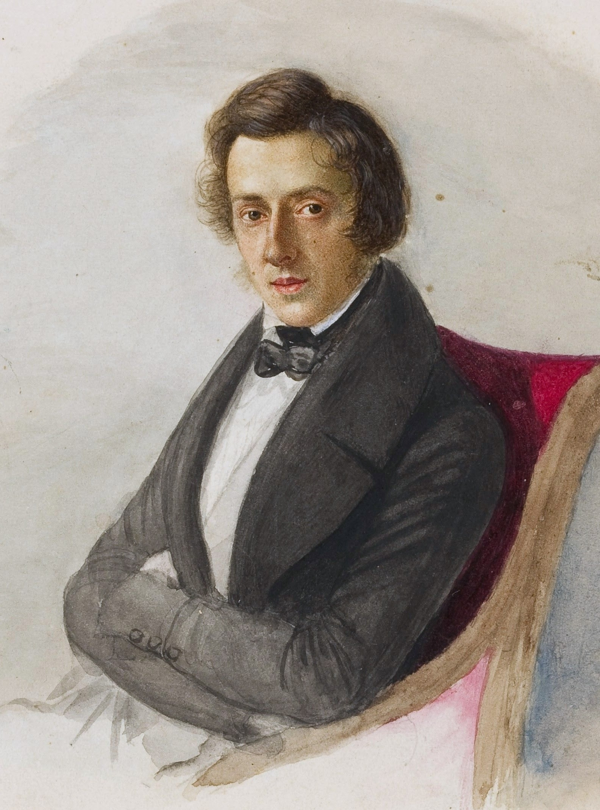
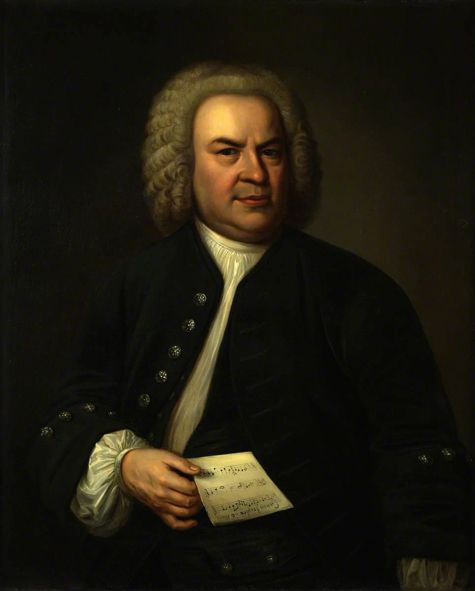
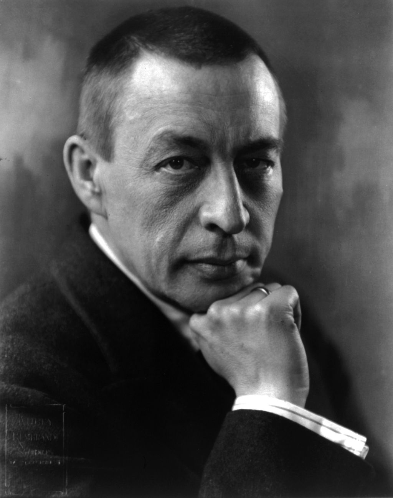

| Ludwig van Beethoven |
|
Ludwig van Beethoven, (baptized
December 17, 1770,Bonn,
archbishopric of Cologne
[Germany]—died March 26,
1827, Vienna, Austria),
German composer,the predominant
musicalfigure in the transitional
period between the Classical
and Romantic eras.
Some of the best pieces:
- Piano Sonata No. 14
- Piano Sonata No. 8
- "Archduke" Trio in E-flat, Op. 97
- Symphony No. 9
read more about Beethoven, click here
|

|
| Frédéric Chopin |
|
Frédéric Chopin was a renowned Polish and French
composer who published his first composition at
age 7 and began performing one year later. In 1832,
he moved to Paris, socialized with high society
and was known as an excellent piano teacher.
His piano compositions were highly influential.
- Fantaisie-Impromptu
- Prelude Op. 28 No. 4 In E Minor
- Piano Concerto No. 1
- Etudes, Op. 10
read more about Chopin, click here
|

|
|
| Johann Sebastian Bach |
|
Johann Sebastian Bach had a prestigious
musical lineage and took on various
organist positions during the early
18th century, creating famous compositions
like "Toccata and Fugue in D minor."
Some of his best-known compositions
are the "Mass in B Minor," the "Brandenburg
Concertos" and "The Well-Tempered Clavier."
Some of the best pieces:
- Concerto for Two Violins in D minor
- Toccata and Fugue in D minor
- Six Suites for Solo Cello
- Violin Partita No. 2
read more about Bach, click here
|

|
| Sergei Rachmaninoff |
|
Sergei Rachmaninoff, composer who was the
last great figure of the tradition of
Russian Romanticism and a leading piano
virtuoso of his time. He is especially
known for his piano concerti and the piece
for piano and orchestra titled Rhapsody on
a Theme of Paganini (1934).
- Piano Concerto No. 3 in D minor
- Symphony No. 2
- Rhapsody on a Theme of Paganini
- Vespers (All-Night Vigil)
read more about Rachmaninoff click here
|

|
|